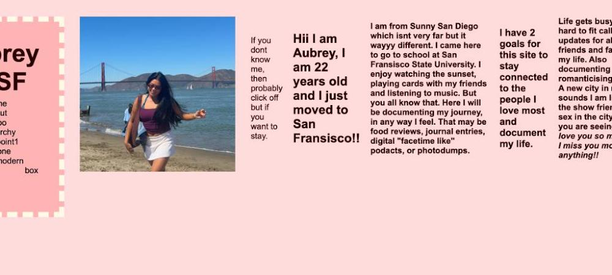
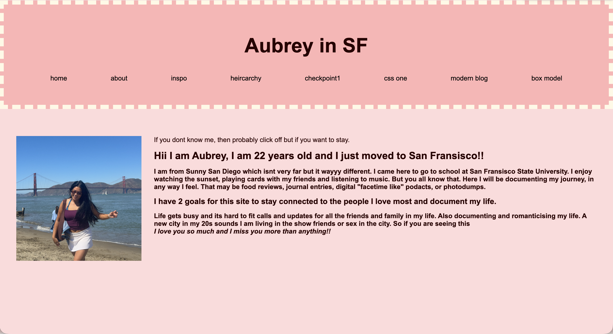

there are no rules to creativity

This sketch was from a different idea of a webiste. I swicthed my webiste purpose to the current blog style I have now. The sketch shows a digital mannequin I would use to help pick out my outfits everyday. It also looks so confusing becuase I sketched this on an empty page in my planner.
On my journal page, I included a title, descriptions, and pages that I want to grow with my site. I tried to keep my navigation links simple to describe what I plan to add. I haven't created the separate HTMLs yet to make the links actually work. So the IA is not complete yet. Like mentioned in the article, navigation and IA work hand and hand. I decided the visitor should see an introduction of myself and the goal of the page as the first point of contact. The sketch I created helped me create titles for the navigation pages. Currently, this page feels very unresolved; I am not super proud of this rough draft. The pages aren’t created yet, and I plan to add images and decorate this starting page.
I styled the full page with a light pink background; the navigation is a little darker pink with a cream dashed background. The title is in bold in the center, and the links to the other pages are spaced out evenly and in the center. The navigation being consistent improved the flow of all the pages; this was a MAJOR jump from a few random links on a page to the start of a real site. In the root sheet is the major overarching theme, and then in the child sheet there are page-specific changes. From what I can think of: font differences, images, and sub-themes can be on the child sheet. But I want to keep the dashed navigation border on the root sheet. This assignment really gave me hope and made me feel a lot better about the progress of my site. The second I got all of my pages to use the same style sheet using the ../ it felt like an AhhhHa moment, and got so excited!!
Changing the site to a live GitHut site didnt break any of my links or change anything. The only thing I noticed that changed was that my video was finally able to work on my about me page. Althought it is now a bit more of a proccess to alter the actual site with out a server I would say GitHub has only helped me. Submitting will be alot easier and it looks like a real site!!

Today I changed the look of the point of journal. My goal was to add a picture of myself in San Francisco and allign the text to the right of it. This was more difficult than I imagined becuase of the organization of classes. I assumed that under the body portions if I had the image and the text under two diffeerent divs or sections then I could align them beside each other easily. But when I would align them somehow the navigation bar would align beside eachother aswell. It wasnt until I added another section underneath the body surrounding the image and text i could arrange just the two!

I added a flexbox to my point of entry page by placing the picture and paragraph next to each other. All the other pages are still using vertical layouts. But I want to use flexbox later to organize the inspo images and descriptions so they are beside each other.
Checkpoint One helped me understand how separate pages become one connected website. The most confusing part was learning which links needed ../ to move out of a child folder. It was also difficult to remember how to create links without looking at an example. I am most proud of my navigation and the cream dashed border around it. I was excited that I connected the stylesheet correctly on my first attempt and created consistent colors and navigation across all my pages.
I also experimented with Flexbox to place my photograph beside the introduction. At first, it was confusing because I changed the Flexbox properties, margins, and padding at the same time, so I could not tell which rule was affecting the layout. This taught me to change one property at a time. Next, I want to use Flexbox to place the Inspiration descriptions beside their images and the About biography beside the video. I would also like to add a font that better matches the personal style of my website.